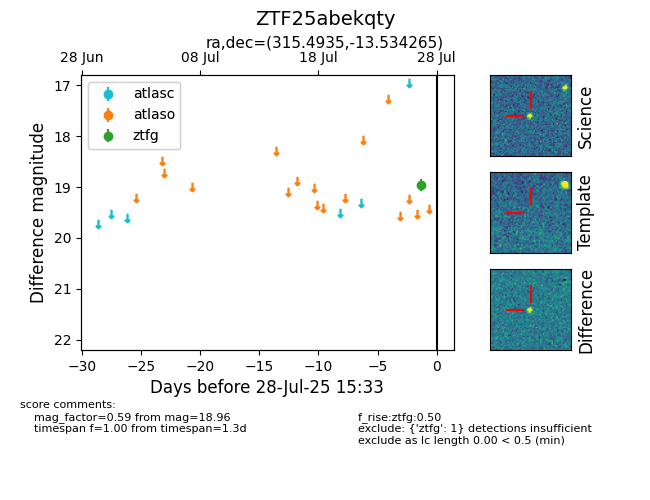

Target ZTF25abekqty at 2025-07-28 15:33, see:
FINK: fink-portal.org/ZTF25abekqty
Lasair: lasair-ztf.lsst.ac.uk/objects/ZTF25abekqty
ALeRCE: alerce.online/object/ZTF25abekqty
alt names
ZTF25abekqty (ztf,fink)
coordinates:
equatorial (ra, dec) = (315.4935,-13.53426)
galactic (l, b) = (35.0855,-34.98266)
photometry
last ztfg=18.96
1 ztfg detections
